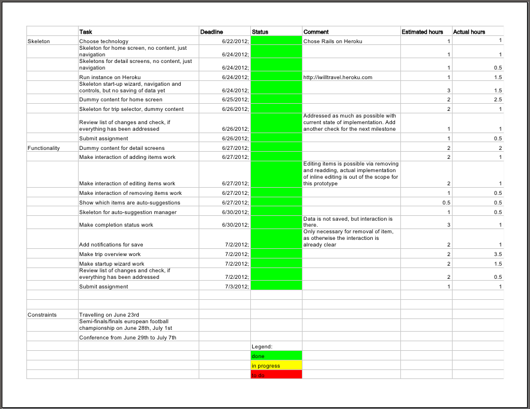

Ready for Testing
Implementation Plan
After another week of work the prototype was ready for testing. The implementation plan showed all green.

Evaluation Plan
# Evaluation Plan This is the evaluation plan for the prototype of the "I will travel" application, a personal assistant for travel planning. It lets people create and manage travel checklists based on auto-suggested todo items. ## Goals The goal of the evaluation is to test the following functionality of the prototype: * Creating a travel checklist by entering the trip data, i.e. destination and dates * Navigating the generated checklist * Modifying the generated checklist by removing auto-suggested items and adding new custom ones * Checking off done items The focus will be on testing the navigation of the application and the interaction with the todo lists. Managing auto-suggestions or other settings is out of scope as well as user handling, like account creation or login. ## Limitations The prototype has limited functionality. It doesn't save the done state of the todo items, the settings pages are only stubs, and there is no actual undo. The auto-suggestions and context-created information is hard-coded to a London trip with pretty good weather. ## Test setup There will be in-person tests with two or three people of different age using the thinking-aloud method and an interview after the tests. The people will likely include those from the initial needfinding observation, so we can evaluate, if their needs are addressed by the prototype. Users will use the prototype web app on their own laptop in their usual environment. The tests will take place next week after work. This is supposed to create a casual environment close to the one, where the application actually would be used. The users will be given a set of tasks to run through on the prototype. Observations will be noted, and some data will be measured like the trip data, the resulting checklists, and the number of attempts used to accomplish goals. I will act as facilitator and recorder. I will give users instructions, read them a task and let them do them while they think aloud. This will be repeated with the other task. Help will be provided only, when users run into the parts of the application which are out of scope of the test and not fully implemented. This way users tests won't be affected by limitations of the prototype. The tests are planned for 20 minutes of test and 5 minutes of concluding interview. ## Hypothesises The following hypothesises will be tested: * The setup wizard will make it simple to create trips and prevent errors * The checklist overview allows people to quickly navigate to the lists they need * Inline editing lets users modify todo lists reliably without losing context Test results and measured data will be used to check the hypothesises and identify areas of improvements and required changes. ## Tasks * Create a trip to London. You are leaving on July 20th and are coming back the Sunday afterwards. * Add two tasks to your checklist: Pack elegant shoes for the opera, and buy tickets for the opera. * Remove the task for packing a hat. * Add a task you think you would need to accomplish if you would travel to London * You have booked flight and hotel, check off the todo items. These tasks cover the goals of the prototype and allow to observe cases where users might run into unexpected situations. ## Measured data * Entered trip data * Entered todo items * Removed todo items * Checked todo items * Unsuccessful attempts to navigate to an item This data is directly related to the tasks based on the goals of the evaluation and can be used to measure the quality of the interaction, and the accurateness of the results. ## Interview questions * Demographic data * Where were stumbling blocks? * How did the prototype help compared to a paper todo list? * Where could the prototype give more support? The answers to these questions can be used to add some qualitative analysis of the prototype and clarify results of the in-person tests.